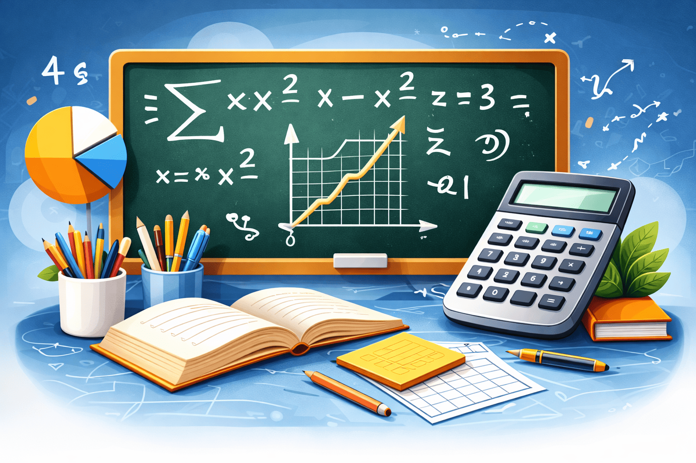
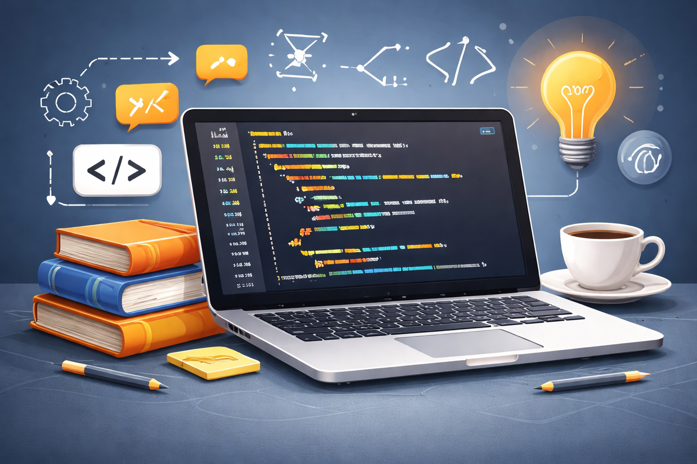
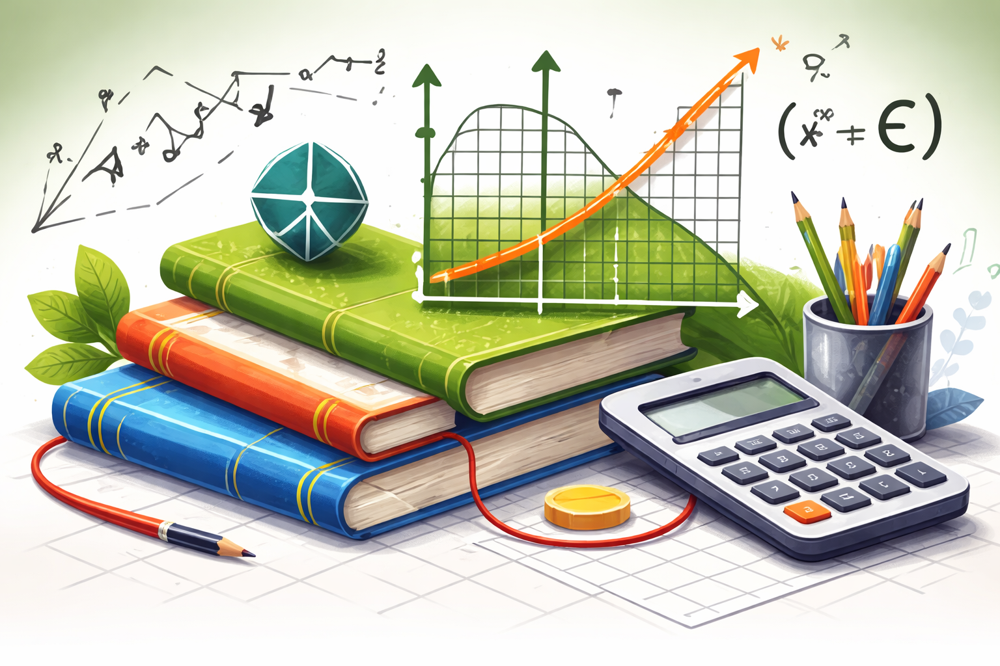
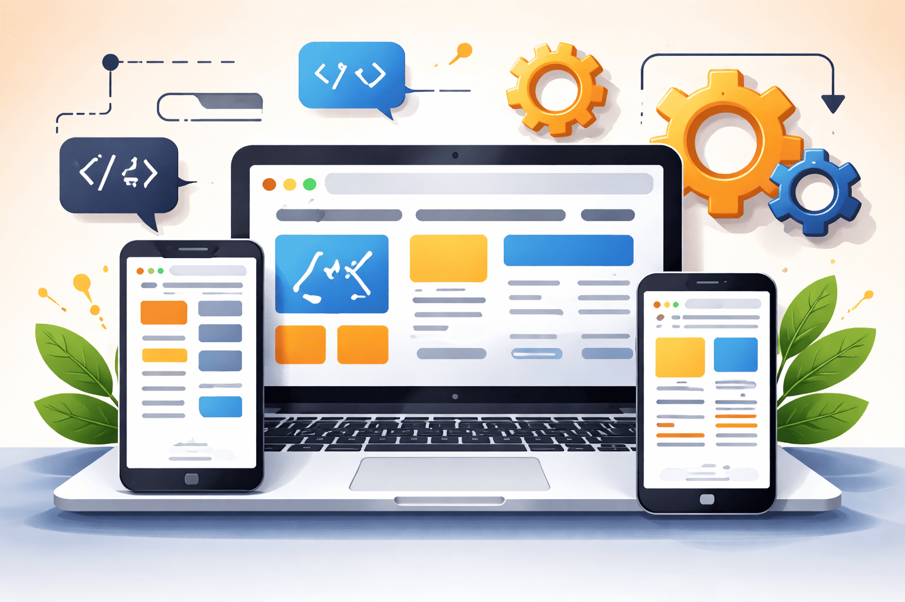
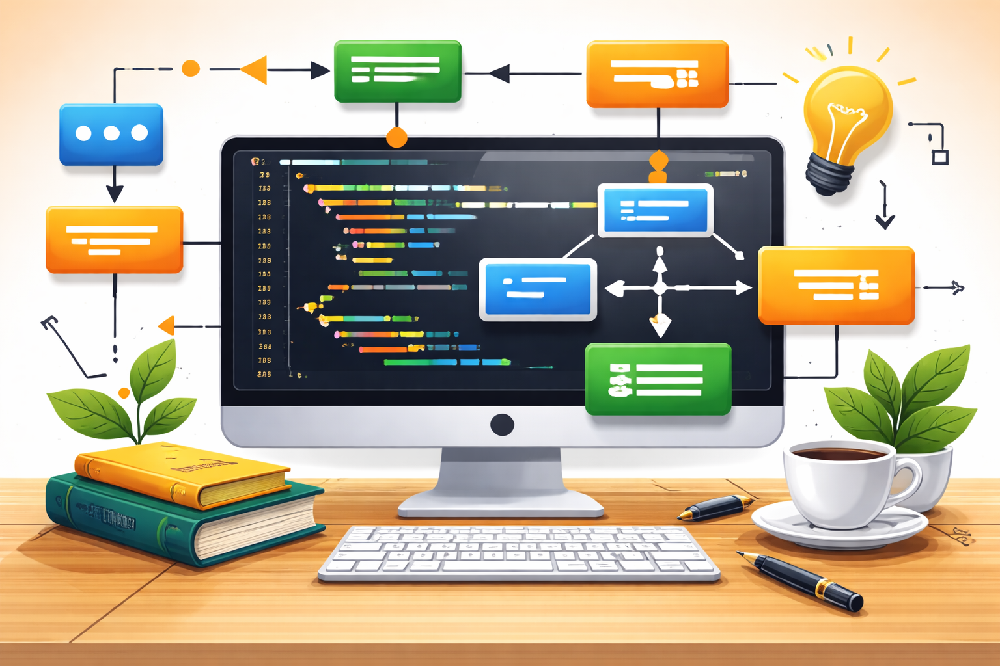
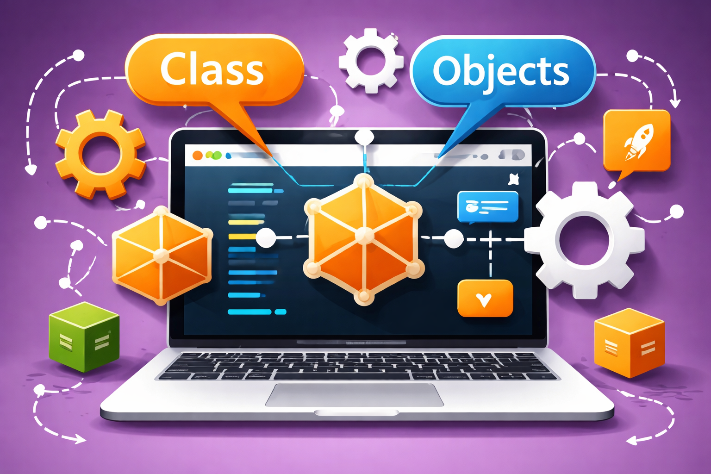
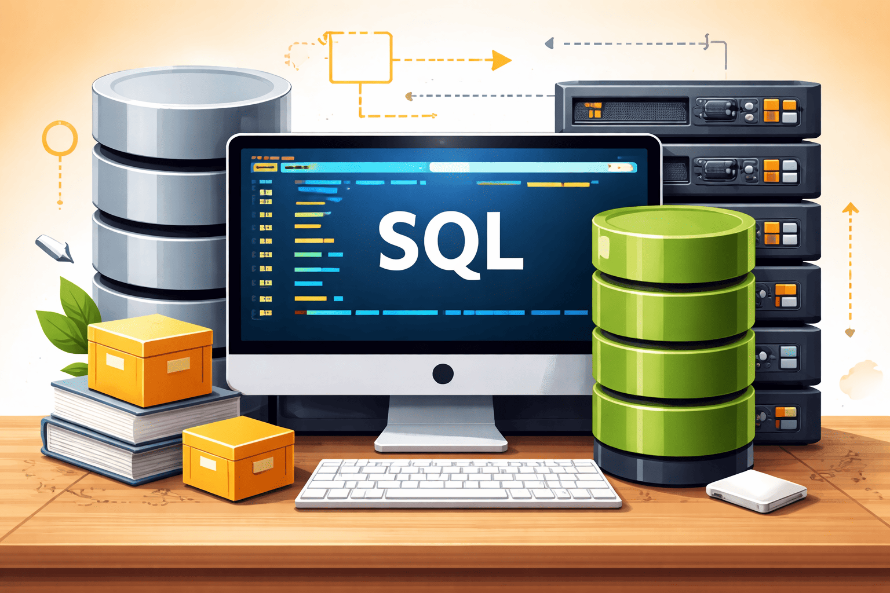

Software Development Year 1 Modules
Year 1 | Semester 1 | September - December 2025

Computer Mathematics
Credits: 05
This module is focuses on the mathematical concepts that underpin computing, including logic, number systems, and discrete structures. It helps learners understand how data is represented and manipulated inside computers. This subject builds the foundation for problem-solving and algorithm design in computing.
Computer Organisation and Architecture
Credits: 05
This module explores how computer systems are structured and how their components interact. It covers topics such as processors, memory, input/output systems, and instruction sets. Students gain insight into how hardware executes programs and how system performance is optimized.
Data Essentials
Credits: 05
This module introduces the fundamentals of data collection, storage, and analysis. It teaches how data is structured, managed, and used to support decision-making. This subject also highlights the importance of data quality, privacy, and basic analytical techniques.
Interpersonal Skills
Credits: 05
This module focuses on effective communication, teamwork, and professional behavior in collaborative environments. It helps students develop emotional intelligence and conflict resolution abilities. These skills are essential for working successfully in both technical and non-technical roles.

Introduction to Programming
Credits: 05
This module teaches the basics of writing code to solve problems using a programming language. It covers fundamental concepts such as variables, control structures, and functions. This subject lays the groundwork for logical thinking and software development.
Introduction to Object Oriented Programming
Credits: 05
This module explains how to structure programs using objects and classes. It introduces key principles such as encapsulation, inheritance, and polymorphism. This approach helps create modular, reusable, and maintainable code.
Year 1 | Semester 2 | January - May 2026

Mathematical Methods
Credits: 05
This module provides tools and techniques used to solve complex computational and real-world problems. It often includes topics like algebra, calculus, and probability. The subject strengthens analytical thinking and supports advanced studies in computing and data science.

Responsive Design and Web Development
Credits: 05
This module focuses on creating websites that adapt to different devices and screen sizes. It covers front-end technologies such as HTML, CSS, and JavaScript. Students learn to build user-friendly, accessible, and visually appealing web applications.
Operating System Fundamentals
Credits: 05
This module examines how operating systems manage hardware and software resources. It includes topics like process management, memory allocation, and file systems. This subject helps students understand how applications interact with the system.

Structured Programming
Credits: 05
This module emphasizes writing clear, logical, and well-organized code using control structures like loops and conditionals. It discourages unstructured practices and promotes readability and maintainability. This approach improves problem-solving and debugging skills.

Introduction to Object Oriented Programming
Credits: 05
This module explains how to structure programs using objects and classes. It introduces key principles such as encapsulation, inheritance, and polymorphism. This approach helps create modular, reusable, and maintainable code.

Structured Query Language Essentials
Credits: 05
This module introduces the use of SQL for managing and querying databases. It covers how to create, retrieve, update, and delete data efficiently. This subject is essential for working with relational databases in many applications.